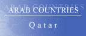

The Country & People of Qatar
This page contains links to sites in Qatar and Qatar related sites.
For Middle East, North Africa, Arab and regional information visit Arab Countries
Hints:
- Use the "FIND" function in the Edit menu of your browser to search the page
- Use translating services in Chrome or Bing Bar in Internet Explorer to view page and/or linked websites in your language
General Info
* Business
* Culture
* Education
* History
* Media
* Organizations
* Travel
* Arab Countries
Qatar, officially State of Qatar, independent emirate (1995 est. pop. 534,000), 4,400 sq mi (11,400 sq km), on a largely barren peninsula in the Persian Gulf, bordering Saudi Arabia and the United Arab Emirates (S). The capital is Doha. The economy of Qatar is dominated by oil and natural gas, which accounts for 70% of export income. Oil and gas revenues have been used to diversify the economy, including the development of chemicals, steel, cement, and fertilizer industries and banking. A minority (20%) of the population are Qataris (Arabs of the Wahhabi sect of Islam); the rest are largely other Arabs, Pakistanis, Indians, and Iranians. Arabic is the official language, but English is also widely spoken. The country is a monarchy.
History
Qatar was ruled by Bahrain from the 1700s until the mid-1800s, when Great Britain and the Ottoman Empire began vying for control of the peninsula. It was a British protectorate from 1916 until 1971, when it became independent. In the 1980s and 90s Qatar had territorial disputes with Bahrain and Saudi Arabia. These disputes were not completely settled until 2001.
During the Persian Gulf War (1991), international coalition forces were deployed on Qatari soil. Palestinians were expelled from Qatar in retaliation for the pro-Iraqi stance of the Palestine Liberation Organization (PLO), but since the war relations with the Palestinians have returned to normal. After the Persian Gulf War, Iraq was still regarded as a threat to Qatar’s oil interests; Qatar signed a defense pact with the United States but also restored relations with Iraq.
The present emir, Sheikh Hamad bin Khalifa al-Thani, came to power in 1995 after ousting his father. In the late 1990s Sheikh Hamad eased press censorship and promoted ties with Iran and Israel.
Since 2001 Qatar has allowed U.S. use of the Al Udeid air base, and the headquarters for the U.S. invasion of Iraq (2003) were in the country.
The emir has moved steadily to democratize the nation’s government and institute elections. In 2003 voters approved a constitution establishing a largely elected advisory council with the power to pass laws, subject to the emir’s approval; women have the right to vote and hold office.
The constitution was endorsed by the emir in 2004 and came into force in 2005.
During the Arab Spring Qatar was supportive of uprisings in Libya, Egypt, and Syria, and was seen as politically allied with Muslim Brotherhood groups in number of Arab nations.
Sheikh Hamad abdicated as emir in 2013 and was succeeded by his son Sheikh Tamim bin Hamad al-Thani.
Preparations for the 2022 World Cup, to be hosted by Qatar, threw light on the country's labor laws and the conditions of migrants working there. Under the country's system of kafala, or sponsorship, workers cannot leave the country or change jobs without their sponsor's permission; there were accusations of abuse of foreign workers involved in construction projects. In 2014 there were tensions with Bahrain, Saudi Arabia, and the United Arab Emirates over Qatar's support for Islamists in foreign countries.
********
Copyright (c) 2012 Columbia University Press.
Used by permission of Columbia University Press.
General Info
General information, Cities, towns, municipalities, places, flag, maps, useful Information....
Business
Economy, reports, statistics, banks, directories, jobs, investment, promotion....
Culture
General resources, heritage, art, literature, photography, cinema, music, song, dance, cultural, scientific,
environmental, sporting entities & info....
Education
Schools, colleges, academies, universities, polytechnics, institutions, research, resources, projects....
History
Ancient & modern history, human rights, politics & political parties, related sites, articles....
Media
Newspapers, magazines, news, newsletters, news agencies, radio, TV, internet, articles, reports, cartoons....
Organizations
Government, ministries, overseas missions, embassies, corporations, organizations, industrial entities, centres,
public hospitals, institutions, societies, foreign entities....
Travel
Airlines, air, sea & coach charters services, travel, tours, guides, hotels, resorts, inns, hostels, health,
travel tips, weather....
Arab Countries
Arab World: Middle East, North Africa, Arab and regional information. Resources to other Arab countries....
About Qatar
General Information Also see Travel
- Answers.Com Questions answered....
- Atlapedia Geography, climate, people, demography, religion, education, modern history, currency, other information....
- BBC Country Profile Key facts, figures and dates
- Britannica.Com Country info, land, people, economy, society, government, history, culture, maps, statistics, links....
- CIA World Factbook Map, geography, people, government, economy, communications, transportation, military, issues
- Country Facts Geography People Government Economy Communications Transportation Military Transnational Issues
- Encyclopedia.Com Land, People, and Government, Economy, History
- Expedia Almanac, fast facts, communications, on business, health & safety, transportation, traveller's directory
- HRW World Atlas Brief info and map
- Info Please General info, map, geography, government, history, land & people....
- Nation By Nation Info, government, human rights, news, geography, history, people, links....
- Nation Master Facts and figures from many sources
- Nations Online Official Sites, Map, News, Culture, Business, Country Guides, Education, History, Search, Additional Links
- Qatar-Info For anyone who wants to find out more about life in the State of Qatar. General & practical info, what to do....
- Wikipedia, the free Encyclopedia History, politics, governorates, economy, geography, demographics, culture, Qatari law, education
- World Atlas A brief description, fast facts, flag, landforms, maps, traveller info, weather
- World InfoZone Geography, Environment, Architecture, Population, Languages, Religion, Food, History, Economy, Arts, Sport, Holidays....
Cities, Towns, Municipalities & Places
Maps, Flags, Time, Currency, Stamps, Languages & Other Miscellaneous Info
- Banknotes of Qatar Description and images
- Ethnologue Languages
- Flag Explanation, historical, military & political flags, subdivisions, national emblem....
- Stamp World Since 1957 -
- World Clock Local time, sunrise, sunset, GMT offset, daylight saving....
- Banknote World Paper currency since 1973
General Info
* Business
* Culture
* Education
* History
* Media
* Organizations
* Travel
* Arab Countries
Business and Economy
General, Economy, Reports & Statistics
- Australian Department of Foreign Affairs and Trade Economic and Trade information, Heads of Government....
- Bilateral Relations with Japan Diplomatic, investment, economic cooperation, residents....
- Future of Qatar What will the future be like?
- MBendi Business information, news, industries, events
- Ports Focus Ports, harbours, marinas....
- Qatar Chamber Information on Qatar's Industry and Trade, business opportunities, economy and foreign trade, statistical information....
- Qatar Stock Exchange Providing fair, orderly, efficient and facilitated trading....
- Qatari Businessmen Association (QBA) To support and enhance the private sector role in the economy
- Qatar Financial Centre Designed to attract international financial institutions and multi-national corporates to establish business operations
- Qatar-German-Business-Forum For promoting the already existing economic ties and trade links between Germany and Qatar
- Qatar and the IMF Position in the fund, reports....
- Qatar Labor Law Information regarding the Qatar Labor Law both in the private and public sector
- Qatar Tenders Comprehensive projects and tenders information for individuals and businesses across all Industry Sectors
- Qatarization The development of the Qatari workforce, through proper education and training
- US - Qatar Business Council Members, trade, links, news
- US Commercial Service QAtar Doing Business in Qatar, Services Available for US Companies and for Qatari Companies
- World Bank Overview, news & events, data & statistics, publications & reports, development topics, projects & programs, Public Information Center
- World Trade Organization - WTO Provides trade statistics, goods schedules, services schedules and MFN exemptions, trade policy reviews, dispute cases, and notifications
Banks
- Commercial Bank of Qatar Provides the full range of banking services
- Doha Bank The largest private commercial bank in the State of Qatar
- Qatar Central Bank Support the national economy and the stability of the currency
- Qatar International Islamic Bank Help customers achieve their financial aspirations
- Qatar Islamic Bank Various Banking and investment services
- Qatar National Bank Handles all aspects of banking and financial requirements
Directories, Job Opportunities
- Companies in Qatar Web directory of local & foreign companies operating in Qatar....
Investment & Promotion....
- Indian Business & Professional Council Educating Indian Professionals and Businesses to become the most competent and respected expatriate community in Qatar
- Milipol Qatar International exhibition for internal State security displaying security products and services
- The Pearl Offers unique, true freehold investment opportunities in a safe, relaxed, friendly and exclusive environment
- Qatar Expo 2024 To organise international exhibitions and to promote trade relations with different countries....
- Qatar Invest Stimulating the growth of Foreign Direct Investment in Qatar and encouraging local entrepreneurs
- Seqlia Ex Exhibitions, events, festivals and conferences management firm in Qatar
General Info
* Business
* Culture
* Education
* History
* Media
* Organizations
* Travel
* Arab Countries
Art, Culture & Sport
General Resources, Heritage....
- Qatar National Museum Display the elements of Qatar's history and the traditional modes of life of it's people
Art, Literature, Photography, Cinema....
Music, Song & Dance & Events
Cultural, Scientific, Environmental, Sporting Entities & Info
- Bangiya Parishad Qatar Bengali social organisation, website has a description of its many social and cultural activities
- The Diplomatic Club A club with many facilities....
- Qatar Voluntary Voluntary activities to serve the community
- Pakistan Engineers Forum Qatar Professional organization for Pakistani engineers and other professionals in Qatar and elsewhere
- Al Shaqab Stud To maintain the breeding of the original Qatari horse....
- Friends of the Environment Center
- Qatar Animal Welfare Society, (Q.A.W.S.) Daily care of the animals, legislation issues, the recognition needed, community education and involvement
- Qatar Science Club & Occidental Reef Ball Project Environment awareness which aims at promoting the good of all people
- Asian Games 2030 Events, participants, historical news and info on the 39 sports in Doha 2006
- Al Rayyan Sports Club Different sports, news, analysis....
- Al Wakra Sports Club Cultural and sport activities....
- Doha Golf Club Tour, clubhouse, events, news, membership....
- Qatar Aeronautical College Golf Society Regular competitions, play other golf societies, clubs or associations and organise trips....
- Qatar Bowling Federation Teams, tournaments, news....
- Qatar Cricket Association News, schedule, statistics, players, archives....
- Qatar Racing and Equestrian Club History, dressage, show jumping, events & results, riding school....
- Qatar Fencing Federation Headlines, events....
- Qatar Football Association National league, cups, teams....
- Qatar Golf Association To introduce and train a whole new generation of young Qatari Golfers
- Qatar Martial Arts Center (QMC Qatar) Emphasis on head-height kicks, jumping and spinning kicks, and fast kicking techniques
- Qatar Masters One of the most prestigious golf events in Qatar's sporting calendar
- Qatar Motor and Motorcycle Federation Promote and organize National and International events in the State of Qatar
- Qatar Olympic Committee Local and International sport news....
- Qatar Squash Federation Squash fans will witness an enterprising diversion within the coming years
- Qatar Taekwondo, Judo & Karate Federation Qatar Martial Arts Federation organizes events and hosts visits by experts from overseas
- Qatar Tennis Federation Qatar Exxon Mobil Open, Qatar Total Fina Elf Open....
General Info
* Business
* Culture
* Education
* History
* Media
* Organizations
* Travel
* Arab Countries
Education
Schools, Colleges, Academies, Universities & Polytechnics
- Schools In Qatar Directory that includes more than 300+ schools, all what you need to know about schools in Qatar....
- Cambridge School Provides an education based on The National Curriculum for England
- Doha Academy A range of balanced academic, creative and physical programmes
- Doha College Curriculum is based on the national curriculum for England and Wales
- Doha English Speaking School - DESS A broad and balanced education within a secure and challenging environment
- Ideal Indian School Provide high standard of education....
- Qatar Academy Internationally recognized pedagogy and curriculum with Arabic and Islamic studies, from preschool through secondary education
- Qatar Academy – Al Wakra Embraces an inquiry-based, culturally enriched international curriculum
- Qatar Academy Sidra Part of the Qatar Foundation's Pre University Education, co- educational international school
- Qatar International School Following the British curriculum
- Al Jazeera Academy A different and separate learning environments
- Al Rayyan International University College (ARIU) Business related degrees with tourism, hospitality and international business studies focus
- Carnegie-Mellon University - Qatar Campus Offers programs in business administration and computer science
- College of the North Atlantic - Qatar A high quality, student centered, public post-secondary technical institution
- Department of Geology, UQ Mineralogy, petrology, geochemistry, links to earth sciences
- Qatar Aeronautical College Holistic aeronautics programs through world-class environments and standards to individuals
- Qatar Music Academy Study under the guidance of the world's music elite
- Qatar University, QU The university encourages the use of modern technologies in education
- Texas A & M University-Qatar (TAMUQ) Offers university degree programs in oil, chemical, electrical and mechanical engineering
- University of Calgary Foundational tool for teaching & preparing nursing students. Bachelor of Nursing Program
- University of Doha for Science and Technology The national higher education institute of choice for applied technical and vocational education and training
- Virginia Commonwealth University - Qatar VCU School of the Arts. Educational opportunities in the design professions: Fashion, merchandising, or interior design
- Weill Cornell Medicine - Qatar (WCM-Q) The educational program leads to the awarding of the doctor of medicine degree
Institutions & Organizations
- Qatar Foundation Focuses on the collaboration and integration of research and higher education program
Research, Resources & Projects
- Qatar Science & Technology Park An internationally recognised hub for research and commercialisation
General Info
* Business
* Culture
* Education
* History
* Media
* Organizations
* Travel
* Arab Countries
History, Human Right & Politics
Ancient & Modern....
- Al Thani Dynasty Brief history, genealogy, orders & decorations
- British Empire - Qatar Initial Contacts, Administration, Role within the Empire, Withdrawal from Empire
- Political Geography Land and people, economy, government, history....
- Sheikha Mozah Supporting the country's National Vision and promotes the progress of Qatar and the wellbeing of its people
Human Rights, Politics & Political Parties....
- Amnesty International News, reports, urgent action. Latest annual report....
- Human Rights Watch Human rights developments & report
- National Human Rights Committee of Qatar Mission, Objectives and Vision, Governance
- US Department of State Country report on human rights practices
Related Sites, Articles....
- Constitution Society Articles of the Constitution of Qatar
- The Duality of the Legal System One applies sharia law (Muslim law). Second, adlia court (civil court)
- Global Security US military facilities in Qatar. Locations, Satellite Imagery, Units....
- A Guide to Qatar's Legal System History, legislative system, the judicial system, the judiciary, the legal profession
General Info
* Business
* Culture
* Education
* History
* Media
* Organizations
* Travel
* Arab Countries
Visit Arab Media for satellite stations & Arab newspapers
Media
Newspapers, Magazines....
- Al Raya Daily newspaper
- Al Sharq Daily newspaper
- Al Watan Daily newspaper
- Gulf Times Daily newspaper
- The Peninsula Daily newspaper
OnLine News, Newsletters, News Agencies....
- Qatar News Agency News, images & pictures....
Radio, TV, Internet....
- Al Jazeera All-news satellite TV channel serving audience in the Middle East, North Africa and Europe
- LyngSat Free TV channels from Qatar. Includes links to Al Jazeera Children, Sport, News channels and others
- Qatar Television & Radio QTV - Channels 9, 11 & 37
Articles, Reports, Cartoons....
General Info
* Business
* Culture
* Education
* History
* Media
* Organizations
* Travel
* Arab Countries
Visit Arab Organizations for Pan-Arab, Middle East, North Africa and regional organizations
Government & Organizations....
Government, Ministries, Overseas Missions, Embassies....
- Chiefs of State and Cabinet Members
- Amiri Diwan Officials and departments. About Qatar
- Hukoomi, Qatar e-Government Deliver government services on-line to the citizens, residents and business sector....
- Ministry of Economy and Commerce Allows local investors to obtain investment opportunities offered by Major Foreign and local companies operating in Qatar
- Ministry of Endowments & Islamic Affairs Islam as a creed and a way of life
- Ministry of Foreign Affairs Nation & citizens, government, economy, tourism....
- Ministry of Interior Visa Tracking System, Traffic violation inquiry service and other services
- Ministry of Municipal Affairs & Agriculture Online services, MIS centre, structure, job opportunities....
- Ministry of Public Health Oversight of public health service programs
- National Health Authority Health Education and Media Dept
- Qatar National Project Management Part of an intelligent i-government culture which will provide leadership with modern tools
- Embassy of Qatar in Italy Rome
- Embassy of Qatar in USA - Washington DC Washington DC. A profile of Qatar and its political system, its royal family, and visa regulations
- General Consulate of the State of Qatar in Houston USA Citizen Services, Visas....
- General Consulate of the State of Qatar in Los Angeles USA Citizen Services, Visas....
- General Consulate of the State of Qatar in New York USA Citizen Services, Visas....
- Permanent Representative of the State of Qatar to the United Nations (UN) showing the State's views and implementing its policy in all areas of international cooperation
Corporations, Organizations, Public Hospitals and Industrial Entities
- Hamad Medical Corporation Departments, education & Training, health Information, journals, tenders, employment....
- Ooredo0 The internet service provider
- Qatar Chemical Company Q-Chem - An integrated petrochemical plant
- Qatar Electricity & Water Company QEWC - Power generation and desalination
- Qatar Energy Delivering the cleaner energy that the world needs
- Qatar Fertilizer Company QAFCO
- Qatar Gas Qatar Liquefied Gas Company
- Qatar Lubricants Company QALCO - Makers of Qatar’s own lubricants
- Qatar National Cement Co ( S.A.Q) A major producer of Ordinary Portland Cement, Sulphate Resistant Cement, Hydrated Lime and Calcined lime
- Qatar National Hotels - Katara Hospitality QNHC - To establish, own, and manage hotels and tourist related projects
- Qatar Navigation - Milaha Qatar's main shipping operator
- Qatar Petroleum Company QAPCO - Producer of low-density polyethylene (LDPE) - a basic plastic polymer that is derived from oil and natural gas
- Qatar Post Modern life postal services
- Qatar Steel Company (QASCO) A foremost leader in the steel industry
Centres, Institutions, Societies....
- Geographic Information Centre GIS - Journal, events, map & data sales, training....
- Qatar Charity Society Undertake its activities in Asia, Africa and Europe
- Qatar Cancer Society Pledges to work towards increasing public awareness about cancer and cancer prevention
- Qatar Red Crescent Society Charitable and humanitarian organization
- Reach Out to Asia (ROTA) A charity initiative founded in Qatar to provide those in need with quality education
- Shafallah Center Provide comprehensive services to children with disabilities....
- Zakah Fund To collect and distribute Zakah and Sadaqa
Foreign Entities
- Bosnia and Herzegovina Embassy Handles political, economical, cultural, sports, educational and technical issues and also provides full Consular services
- France Embassy Consular section, economics & commerce, cultural centre....
- India Embassy Consular & visa services, labour/welfare, info....
- Iran Embassy Commercial, Consulate, tourist and cultural sections. News & photos....
- Italy Embassy Consular services, visas, economics & commerce, info about Qatar & Italy....
- Nepal Embassy Nepal-Qatar relation, consular services, manpower recruitment, tourism, associations....
- US Embassy In the embassy, current, regional & global issues, Washington file, information & services
- British Council Information on education and training
- World Health Organization - WHO Provides news, information and statistics on the country's public health issues and services, professional health workers
General Info
* Business
* Culture
* Education
* History
* Media
* Organizations
* Travel
* Arab Countries
Travel & Tourism
Airlines, Air, Sea & Coach Charters Services
- Doha Airport Provides travel information, hotels near Doha Airport, attractions, getting around, dining....
- Gulf Helicopters Experienced in Offshore Operations
- Qatar Airways High product and service into Europe and the Far East.
Travel, Tours, Guides.... More country info
- Doha-Online Giving you the very best of information on Doha and other cities of Qatar
- Explore Qatar Provides news and information with community pages, contacts, events, expatriate resources and monthly magazine articles
- Online Qatar Info, weather, accommodation, flights, tourism, attractions, map, photo gallery, business & economy, schools and colleges, embessies & consulates
- Qatar Living An online community for everyone living (or interested) in Qatar
- Qatar Music Academy Study under the guidance of the world's music elite
- Qatar Tourism Explore Qatar, practical info, photo gallery, events....
- Regency Travel & Tourism A leading Travel Agency.
- Lonely Planet Travel information, maps, photos, background historical and cultural information
- VOX Cinemas Movies, Info, Showtimes
Hotels, Resorts, Inns, Hostels....
- Al Liwan Suites 83 suites with pure Qatari courtesy & hospitality, resturant and pool side cafe
- Four Seasons Hotel Doha With an exclusive beach and marina, gazes over the Arabian Gulf in the the West Bay business and residential complex
- Grand Regency Hotel Central location with a classical atmosphere
- Merweb Hotel Set to exceed what is expected from a small-sized hotel
- New Capital Hotel Situated in the center of Doha
- Oasis Hotel & Beach Club 4-star hotel. Club offers many facilities for recreation and relaxation
- Qatar Palace Hotel Situated in the heart of the capital DOHA and Commercial Centre
- Ramada Encore Located in the heart of the city....
- The Ritz-Carlton Luxury Hotels Doha
- Sharq Village & Spa A Ritz-Carlton Hotel. Traditional, romantic, and secluded. Feel like royalty
- Rydges Plaza Only ten minutes from the center....
Resturants, Fast Food
(Also check the Accommodation section as most resorts, hotels, motels and inns provide dinning and drinking services to the public)
Health & Travel Tips
- Foreign & Commonwealth Office Travel information, country advise, latest travel updates....
- Smart Traveller - Australia Safety and Security, Local Laws, Entry and Exit Requirements, Health Issues
- US Consular Information Visa, health, crime/drug penalties....
- Wikitravel Up-to-date and reliable world-wide travel guide
Weather....
- Falling Rain Genomics Satellite images available for cities and towns, airports, Latitude/Longitude, temperature, cloud cover....
- Weather Underground Temperature, humidity, pressure
General Info
* Business
* Culture
* Education
* History
* Media
* Organizations
* Travel
* Arab Countries
Please link to this page.
https://www.hejleh.com/countries/qatar.html
For comments, reports of dead links and adding your URL
Names, pictures and logos are the copyright of their respective owners.
(C)Copyright 1998-2024 Mazen Hejleh. All rights reserved.